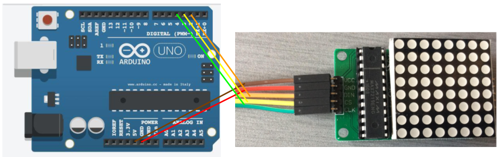

Nous avons fait des recheches pour trouver avec quoi on pourrait faire les yeux. Nous avons décidé de prendre des matrices de LED 8x8:
Ensuite, nous avons chercher des façons pour le programmer. Nous avons trouver un modèle qui nous permet d'afficher tout ce que l'on veut sans utiliser de librairies.
Lien: http://yaab-arduino.blogspot.ca/2015/05/beating-heart-with-arduino-and-max7219.html
Ce code nous permet de modifier la valeur de chacune des LEDs en utilisant un 'Array'
Ex le code suivant dessine un coeur:
const unsigned char heart[] =
{
B00000000,
B01100110,
B11111111,
B11111111,
B11111111,
B01111110,
B00111100,
B00011000
};
Chaque ligne contient 8 chiffres;
Si le chiffre est un 1, la led sera allumée.
Si le chiffre est un 0, la led sera éteinte.
Nous avons donc modifié la variable heart et nous avons fait un oeil à la place. Vidéo:
Nous avons brancher un autre oeil et l'arduino était capable de faire fonctionner les deux relativement facilement.
Le module que nous utilisons a 5 entrés qui sortent dans des fils de 5 couleurs différentes.
VCC: Se branche dans la pin 5V de l'arduino
GND: Se branche dans la pin GND de l'arduino
DIN: Se branche dans la pin 2 de l'arduino
CS: Se branche dans la pin 3 de l'arduino
CLK: Se branche dans la pin 4 de l'arduino
Voici un schéma électrique

Vous pouvez jetter un coup d'oeil à notre code ici: https://github.com/technonerdz/School-work/blob/master/citrouille/programs/eyes.ino
Vous pouvez le télécharger ici: http://www.felixgiffard.com/School-work/citrouille/programs/eyes.ino